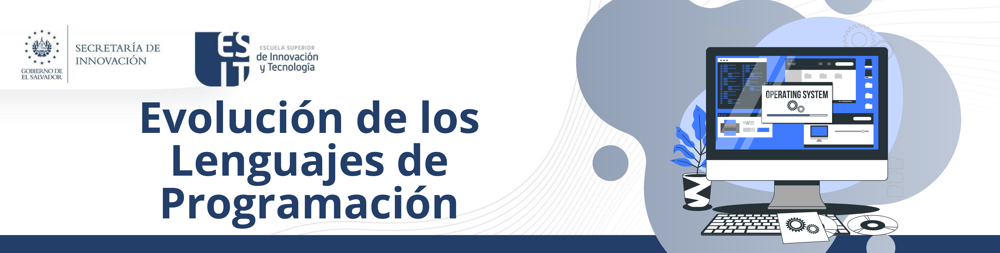

1. Sistemas Operativos
6. Evolución de los Lenguajes de Programación
La evolución de los lenguajes de programación ha sido un proceso amplio que abarca varias décadas, con el objetivo de hacer la programación más eficiente, segura y accesible. A continuación, te presento un resumen de esta evolución a través de diferentes eras y paradigmas:
1. Primeros Lenguajes (1940s-1950s)
- Machine Code: El primer nivel de programación, donde los programas se escribían en código binario específico para cada máquina.
- Assembly Language: Introducido para hacer la programación más manejable, utilizando mnemónicos en lugar de código binario. Cada instrucción de ensamblador corresponde directamente a una instrucción de máquina.
2. Lenguajes de Alto Nivel (1950s-1960s)
- FORTRAN (1957): Desarrollado por IBM, fue el primer lenguaje de alto nivel para cálculos científicos y de ingeniería.
- LISP (1958): Creado por John McCarthy, fue uno de los primeros lenguajes para la programación de inteligencia artificial, introduciendo conceptos como la recursión y el manejo de listas.
- COBOL (1959): Desarrollado para aplicaciones de negocios, enfocado en la gestión de datos y procesamiento de archivos.
3. Lenguajes Procedurales y Estructurados (1960s-1970s)
- ALGOL (1960): Influyó en muchos lenguajes posteriores, introduciendo conceptos de estructura de bloques y la noción de scope.
- BASIC (1964): Desarrollado para la enseñanza de la programación, siendo fácil de aprender y utilizar.
- C (1972): Desarrollado por Dennis Ritchie en Bell Labs, proporcionó un lenguaje poderoso y flexible para el desarrollo de sistemas operativos y software de sistemas.
4. Paradigmas de Programación y Orientación a Objetos (1980s-1990s)
- Smalltalk (1980): Introdujo la programación orientada a objetos, donde el software se estructura alrededor de objetos que interactúan entre sí.
- C++ (1983): Creado por Bjarne Stroustrup, extendió C con capacidades orientadas a objetos.
- Objective-C (1984): Combinó C con Smalltalk, siendo utilizado extensivamente en el desarrollo de software para Apple.
- Perl (1987): Un lenguaje de script versátil, popular para la administración de sistemas y desarrollo web.
5. Programación Funcional y Scripting (1990s-2000s)
- Python (1991): Creado por Guido van Rossum, enfatiza la legibilidad y simplicidad del código.
- Java (1995): Desarrollado por Sun Microsystems, introdujo el concepto de "write once, run anywhere", siendo popular en el desarrollo web y de aplicaciones empresariales.
- JavaScript (1995): Desarrollado por Brendan Eich, se convirtió en el lenguaje esencial para el desarrollo web front-end.
6. Lenguajes Modernos y Multiparadigma (2000s-Presente)
- Ruby (1995): Enfatiza la simplicidad y productividad, siendo conocido por su framework Ruby on Rails.
- C# (2000): Desarrollado por Microsoft, utilizado principalmente en el desarrollo de aplicaciones empresariales y videojuegos con Unity.
- Scala (2003): Combina programación funcional y orientada a objetos, siendo utilizado para aplicaciones concurrentes y distribuidas.
- Go (2009): Desarrollado por Google, enfocado en la simplicidad y eficiencia, utilizado para desarrollar aplicaciones de sistemas y servidores.
- Rust (2010): Enfatiza la seguridad y el rendimiento, eliminando muchos errores comunes en lenguajes como C y C++.
Tendencias Recientes
- Lenguajes Funcionales: Lenguajes como Haskell y Elixir han ganado popularidad por sus ventajas en concurrencia y programación reactiva.
- Interoperabilidad y Scripting: Lenguajes como Kotlin y TypeScript se desarrollaron para interoperar con Java y JavaScript respectivamente, mejorando la seguridad y productividad.
- Inteligencia Artificial y Machine Learning: Lenguajes y frameworks como Python con TensorFlow y PyTorch han facilitado el desarrollo de aplicaciones de aprendizaje automático.
Obra publicada con Licencia Creative Commons Reconocimiento Compartir igual 4.0